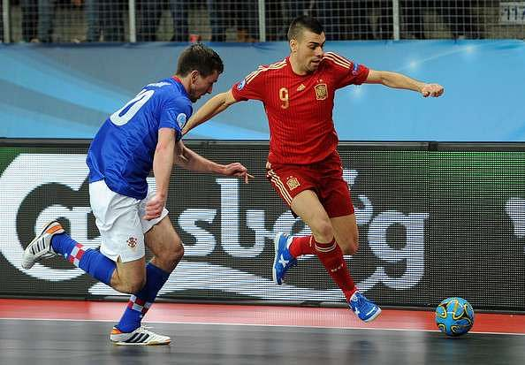
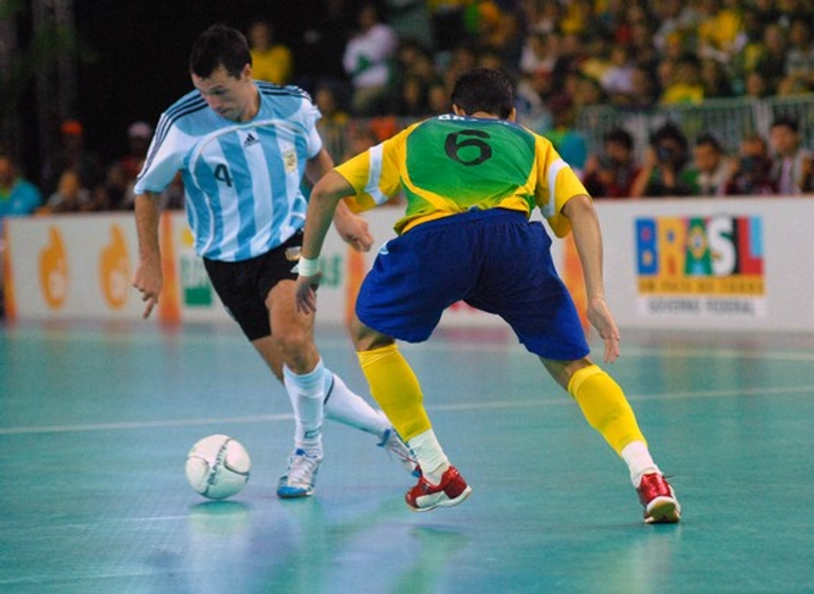

Futsal
is a sport that has originated from Montevideo, Uruguay and was invented by Juan Carlos Ceriani Gravier.
He is a professor born on Buenos Aires, Argentina onthe date of March 9, 1907 and is trained to be a professor of physical education and sports in the ecumenical movement of the YMCA. Futsal is an exciting, fast-paced
small sided soccer game that is played across the world and is officialy recognized by both the FIFA FIFA is a non-profit organization that describes itself as an international governing body of association football, futsal and beach soccer. It is the highest governing body of association football.
FIFA is a non-profit organization that describes itself as an international governing body of association football, futsal and beach soccer. It is the highest governing body of association football. and EUFA UEFA is the organiser of two of the most prestigious competitions in international football: The UEFA European Championship and the UEFA Nations League
UEFA is the organiser of two of the most prestigious competitions in international football: The UEFA European Championship and the UEFA Nations League . The word futsal comes from two spanish words which are
futbol meaning soccer, and sala which means parlor. The game is growing across countries, one of them being the Philippines which was brought in by the PFF.
Futsal is played with a ball that bounces less than a usual football.
The game matches are conducted by two referees, each one on the touchlines. There are no
offsides and when a ball reaches out of play, the game is resumes with a kick-in. The game is played with two teams of five, each one of whom is a goalkeeper
Unlimited substitutions are permitted in the game. The game is played indoors with a hard court surface marked by lines; walls or boards are not used.
The surface, ball and rules together favour ball control and passing in small spaces. The game's emphasis is on improvisation, creativity and technique.
The positions of Futsal include the following:
• The Goalkeeper< The Goalkeeper is the most specialised position in futsal. A goalkeeper's job is mainly defensive: to guard the team's goal from being breached (to not let the other team score). Goalkeeper is the only position defined in the Laws of the Game. Goalkeepers are the only players allowed to touch the ball with their hands and arms, however they are restricted to doing so only within their penalty area; for this reason, they must wear jerseys that distinguish them from other outfield players and the referee.
The Goalkeeper is the most specialised position in futsal. A goalkeeper's job is mainly defensive: to guard the team's goal from being breached (to not let the other team score). Goalkeeper is the only position defined in the Laws of the Game. Goalkeepers are the only players allowed to touch the ball with their hands and arms, however they are restricted to doing so only within their penalty area; for this reason, they must wear jerseys that distinguish them from other outfield players and the referee.
• The Winger (2)The Winger or Wing or Ala or Flank is a player constantly moving forward and backward in the sides of the pitch (left-wing and right-wing), between defense and attack. This position is not as offensive as the pivot, yet not as defensive as the defender.
• The Pivot The pivot, also known as the forward or the topman, is the most advanced player on the pitch.
The pivot, also known as the forward or the topman, is the most advanced player on the pitch.
• The DefenderThis is the list of futsal positions, with a brief explanation of what the position is and notable futsal players of that position. The positioning of these players can attribute to different strategies during the game.
When it comes to advertising the said sport, we have alot of options, starting with traditional advertisements such as papers, posters, telling other people, boards
and so on. But we can use technology and advertize on social media such as TikTok, Twitter, Facebook, etc. Due to the current generations more people are based
around the internet making advertising easier and much more efficient than we are to do it physically. With this we can show people the sport and teach them about
its benefits to us. I hope the readers are persuaded to try out futsal. 01.10.22